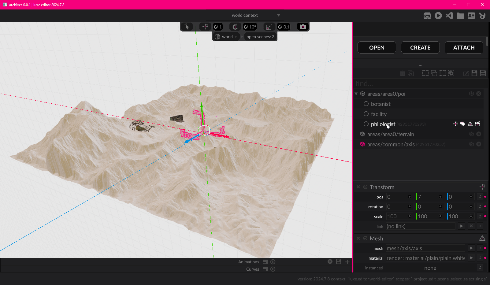

¶
¶
luxe user guide¶
luxe 101¶
Below we'll briefly cover some concepts you need to get started with luxe.
As you go further into the guide, all of the concepts will be expanded in detail.
World¶
In luxe, things in your game are represented inside of a world.
A player character, level elements, UI elements, all of these typically exist in a world.
The world gives you the tools to manage your things, and lets you create spaces where your game can happen. You also often have more than one world, like a UI world and a game world.
Entity¶
In luxe we call a thing an entity.
Entities are the things that exist in a World, like the player or even a menu item.
An Entity is how we talk about a unique thing, which makes it the basic building block of making games in luxe!
Modifiers¶
An entity just exists, it can't do anything yet.
To make an entity do something, we attach modifiers to it!
A modifier describes something you want the entity to be able to do.
If you want your entity to look like a triangle, you attach a modifier to describe that. If you want it to bounce around with some physics too, another modifier is added.
This allows an entity to change at any time, which is very flexible. What it looks like, how it behaves, and what it actually is can change during the game, just by attaching and detaching modifiers.
Systems¶
Systems are what power the modifiers.
A modifier is added to an entity through a world system.
When you talk about a modifier, you talk to the system that gives it to you. A modifier describes what you want, but the system is what actually makes it happen.
For example, attaching a Transform gives an entity a position in a world. You ask the Transform system to attach it, and then you can ask the system to move it around.
Entity based design
This may seem familiar, as there are many different varieties (and names) for this concept! The concept has been around for a very long time and are really common in games.
Services¶
Some systems exist at a lower level, powering everything, and some exist outside the world at a higher level.
We call these systems a service API.
These are systems that serve a general need beneath the other systems. For example, rendering (drawing things) is a system that acts as a service. It is used by higher level world systems to provide your game with drawing. The random number generator, is also a service API.
Modules¶
luxe is designed as a rich set of systems - ready to make games - but it couldn't possibly provide all systems that all different types of games may need without becoming too big and unfocused.
With luxe, modules solve this by providing a way for you to expand the tools, systems and services that are available to you as a user.
luxe is designed for modules to serve this need, which makes them a fundamental part of using luxe. In fact, the luxe API itself is a module too!
Your luxe project¶
Code vs Editor¶
With luxe, if you prefer working through code only, you can. The code focused workflow is complemented by the editor tools. They help you create assets that would be faster to create in a tool, but is optional.

The same will eventually be true for editor focused workflows. Right now the engine leans a little toward code focused, because the editor is a work in progress and higher level modules which provide those workflows are being made now. In the future it would be possible to work only from the editor and make a wide range of content without opening the code.
Project anatomy¶
How to start a new project?
Use the luxe launcher, and from the project page, select new project at the top.
From there you can select which project outline you want to use as the starting point.
Project file
A luxe project is a folder with a project.luxe file inside it. This is the project file.
Inside your project.luxe file, you can set the project name, but it usually is set when created.
Project config
There's also a project config folder, luxe.project/, which is typically where project configuration goes.
This holds files like the modules used, asset manifest, version info and more.
Entry
There's also typically a game.wren file, this is your entry point for the game code.
Outline
Your project will often be created from a template, called a project outline. Your project probably contains an outline/ folder, this is the template part. The project template gives you an easy starting point ready to go.
Running a project¶
Running via the luxe editor or code editor
You can learn how to run the project via code and via the luxe editor from this page in the tutorial.
Running from a command line
You can also run your project from a terminal using luxe run from inside the project folder.
A shortcut is installed to the last installed version of luxe at <home>/.luxe/bin/luxe.
setting the shortcut version
You can set the version using the launcher, by right clicking on an installed version of the engine. The tools + settings page also has an option to set to an explicit path (e.g dev build mode).
mac + linux: ~/.luxe/bin/luxe run
windows: c:\Users\<USER>\.luxe\bin\luxe run
Workflow¶
With this basic understanding of our project, the next step is to see how you manage your content, where to put it, and how to create a basic game!